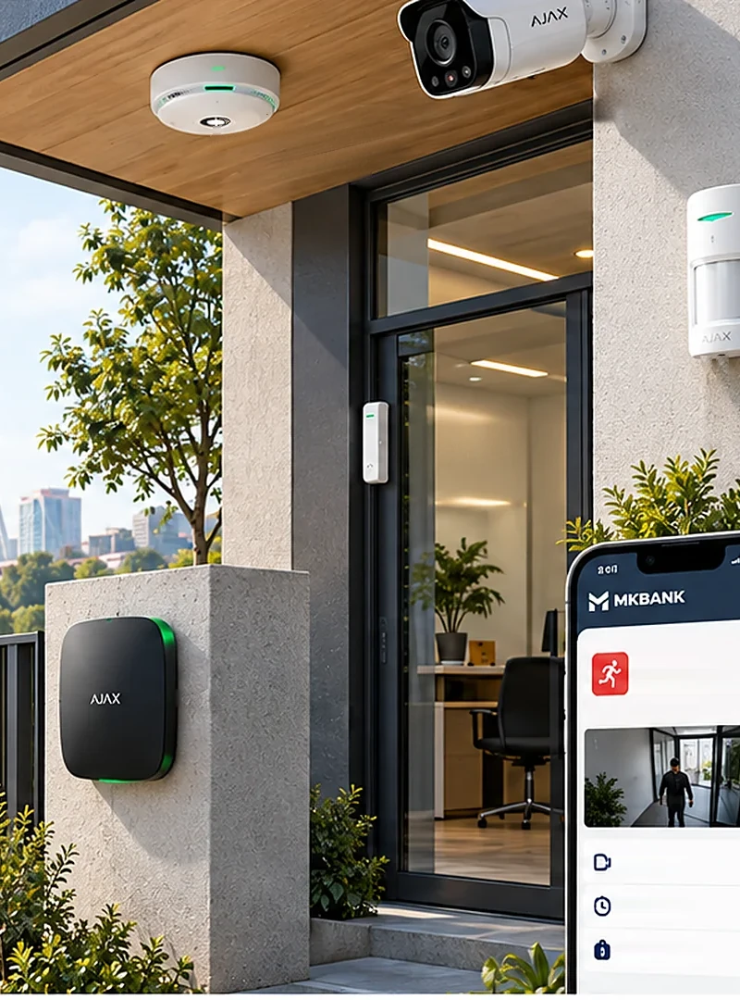

Bu yechim video bermaydi — u xabar beradi. Buzib kirish va yong'in haqida signal birinchi daqiqada keladi, datchiklar esa o'z batareyasida yillab ishlaydi va qishki quvvat hisobiga umuman kirmaydi.
0,75 Vthubning o'rtacha iste'moli
4–7 yildatchik batareyasining muddati
7–20 soniyavideo tasdiq surati yetib keladi
7–10 mln so'mbir obyekt, o'rnatish bilan

Hub, eshik va harakat datchiklari, yong'in datchigi va video tasdiq uchun kamera
01
Obyekt uchun odatiy to'plam
Bitta hub yuztagacha qurilmani oladi, shuning uchun kichik obyektda zaxira juda katta. To'plam obyektning geometriyasi bo'yicha tuziladi: nechta eshik, nechta xona, qayerda qimmat mulk turadi.
Qurilma
Qayerga
Nima beradi
Batareya
Hub 2 (4G)
Ichki xona, ko'zdan yiroq
Radio markaz, 4G kanal, hodisalarni yuborish
15 soat zaxira
DoorProtect
Kirish eshigi, darvoza, deraza
Ochilish lahzasi
7 yilgacha
MotionCam
Koridor, ombor kirishi
Harakat va surat seriyasi
4 yilgacha
FireProtect 2
Har xona shipi
Tutun, harorat, variantga qarab is gazi
5 yilgacha
LeaksProtect
Yerto'la, quvur o'tgan joy
Suv bosishi
5 yilgacha
IP kamera
Asosiy kirish
Hodisadan keyin video tasdiq
doimiy quvvat
Odatiy to'plam: hub, ikkita DoorProtect, ikkita MotionCam, har xonaga FireProtect 2 va ichki sirena. Kamera faqat video tasdiq kerak bo'lgan zonaga qo'yiladi — u doimiy quvvat talab qiladi va butun quvvat hisobini o'zgartiradi.
02
Radio aloqa: nazariy masofa va haqiqiy masofa
Katalogdagi masofa ochiq maydon uchun beriladi. Bank obyektlari esa g'ishtli devor, temir-beton to'sin va metall javonlardan iborat — shuning uchun montajdan oldin signal darajasi har bir datchik uchun alohida o'lchanadi.
Ishonchli radio · 3/3Zaif radio · 1/3, kengaytirgich kerakHub va kengaytirgichMetall javonHar datchikni bosing
Reja ikkita oddiy xatoni ko'rsatadi. Birinchisi — hubni ofisga qo'yish: u yerdan darvozagacha ikkita devor bor va signal ReXsiz yetmaydi. Ikkinchisi — MotionCam'ni javonlar orasiga osish: metall javon 868 MGs to'lqinni yutadi va o'rnatuvchi buni faqat sinov rejimida ko'radi. Shu sababli har bir datchik o'rnatilgandan keyin hub ilovasida signal darajasi o'lchanadi va dalolatnomaga yoziladi: 2/3 dan past joy qabul qilinmaydi.
03
Hubni doimiy tokdan oziqlantirish
Datchiklar quvvat masalasidan butunlay tashqarida. Yagona doimiy iste'molchi — hub, va u zavoddan 110–240 V tarmoqqa mo'ljallangan. Elektrsiz obyektda montajchi standart ta'minot platasini alohida sotiladigan DC modulga almashtiradi.
Ta'minot varianti
Kirish
6 V PSU moduli
6 V DC
12–24 V PSU moduli
12–24 V DC
Ichki zaxira akkumulyator
3,7 V, 3 A·soat — 15 soatgacha
Hisob
Qiymat
Hubning o'rtacha iste'moli
≈0,75 Vt
12 V 50 A·soat LiFePO4, foydali
576 Vt·soat
Zaryadsiz muddat
bir oydan ko'proq
Doimiy yoqiq IP kamera qo'shilsa
4–6 kun
Hub va datchiklar −10…+40 °C ga mo'ljallangan. Isitilmaydigan binoda hub ichki xonaga qo'yiladi va sovuqda batareya muddati qisqaradi: platforma har datchikning batareya foizini alohida kuzatadi.
04
SIA DC-09: adapter pult o'rnida turadi
Ajax hubi hodisani markazlashtirilgan kuzatuv pultiga yuborish uchun yaratilgan va u sanoat standartidagi protokollarni qo'llaydi. Bizda pult o'rnida MKB adapteri turadi: hodisa kanali bulutdan mutlaqo mustaqil ishlaydi. Har datchikning foizli zaryadi esa bu kanaldan kelmaydi — u alohida yo'l bilan olinadi.
Protokol
Hodisa qanday keladi
Adapter TCP portda SIA DC-09 qabul qiluvchini ishga tushiradi. Hub sozlamasida pult manzili sifatida VPN yoki korporativ APN ichidagi adapter manzili, hisob raqami va shifrlash kaliti kiritiladi. Hub hodisani yuboradi, adapter tasdiq qaytaradi; tasdiq kelmasa hub qayta yuboradi.
SIA DC-09 faqat hodisa beradi, video bermaydi. Video tasdiq ikki yo'ldan biri bilan keladi: MotionCam o'z suratini hodisa bilan birga yuboradi, yoki adapter obyektdagi RTSP kamera oqimini o'zi ochib, klipni hodisa kartasiga bog'laydi. Birinchi yo'l energiya talab qilmaydi, ikkinchisi sifatli video beradi.
05
Ko'rik kuni: qo'riqni olish va qayta yoqish
Bu yechimning kundalik hayotdagi asosiy jarayoni — xaridor ko'rigi. Obyekt qo'riqda turadi; kimdir kelishi kerak bo'lganda qo'riq ariza bo'yicha olinadi va tashrif tugagach qaytariladi.
1
Ariza platformada ochiladi: qaysi obyekt, kim keladi, qaysi vaqt oralig'ida. Ariza tasdiqlanmagan bo'lsa, operator qo'riqni olish tugmasini ko'rmaydi.
2
Qo'riq belgilangan vaqtda olinadi. Kim olgani, qaysi ariza bo'yicha va qaysi soatda — hammasi jurnalga yoziladi. Eshik relesi shu buyruq bilan ochiladi.
3
MotionCam kirishni suratga oladi. Surat hodisa kartasiga biriktiriladi: keyinchalik obyektda kim bo'lganini isbotlash uchun bu eng oddiy va eng arzon dalil.
4
Tashrif tugagach qo'riq qaytariladi. Unutilsa, platforma o'ttiz daqiqadan keyin eslatadi va keyin mas'ul xodimga vazifa ochadi: qo'riqsiz qolgan obyekt eng katta xatar.
Amal
Qanday bajariladi
Cheklov
Qurilma holati, DC-09 kanalida
Bayroqlar: qopqoq ochilishi (TA), batareya past (YT), davriy test (RP)
Hodisa bilan birga keladi, bulutsiz; foiz yo'q, faqat bayroq
Batareya foizi va signal darajasi
Ajax PRO/Enterprise API orqali, bulut bilan
Faqat servis rejalashtirish uchun; javob choralari bunga tayanmaydi
Rele orqali buyruq
Zamok, sirena, chiroq — rele moduli bilan
Rele moduli ham doimiy tok oladi
Foydalanuvchi huquqlari
Filial xodimi faqat o'z obyektini ko'radi
Hub 50 tagacha foydalanuvchini oladi
Jonli video
Faqat RTSP kamera qo'yilgan zonada
Kamera doimiy quvvat talab qiladi
06
Yong'in talabi va qo'riqlash chegarasi
Bu yagona yechim bo'lib, u texnik masaladan tashqari huquqiy talabga ham tegadi. Ikkala masalani yuridik xizmat yozma tasdiqlashi kerak — jihoz buyurtma qilinishidan oldin.
Yong'in
Talab obyekt turiga bog'liq
Yong'in xavfsizligi qoidalarining 30-bandi obyektlarni 9-ilovaga muvofiq avtomatik yong'in signalizatsiyasi bilan jihozlashni talab qiladi. 9-ilova bino va xonalar turlarini sanaydi. Talab obyekt turiga bog'liq, elektr bor-yo'qligiga emas: bo'sh turgan bino uchun yengillik berilmagan.
Qo'riqlash
Javob choralari faqat davlat ishi
Qo'riqlash faoliyati to'g'risidagi qonunga ko'ra shartnoma asosida qo'riqlash xizmatini faqat davlat organlari ko'rsatadi. Bank o'z mulkini o'zi kuzatishi mumkin, lekin hodisaga javob choralarini xususiy xizmatga topshira olmaydi. Yagona qonuniy sherik — IIV huzuridagi Qo'riqlash departamenti.
Batareyali datchik yong'in signalizatsiyasi talabini yopishi qoidalarda yozilmagan. Bu masala IIV yong'in xavfsizligi organi bilan alohida kelishiladi: shu kelishuvsiz obyekt loyihada «himoyalangan» deb belgilanmaydi.
Kabel yotqizilmaydi, shtroba qilinmaydi — datchiklar yopishtiriladi yoki ikkita shurup bilan mahkamlanadi. Shu sababli bu ro'yxatdagi eng tez o'rnatiladigan yechim: o'rtacha ofis to'rt soatda topshiriladi.
1
Hub joyi birinchi tanlanadi. U obyektning geometrik markaziga yaqin, ko'zdan yiroq, lekin metall shkaf ichiga emas. Hub ta'minot platasi DC modulga almashtiriladi — bu ish korpus yopilishidan oldin bajariladi.
2
Har datchik uchun signal darajasi tekshiriladi va dalolatnomaga yoziladi. Ikki tayoqchadan past daraja qabul qilinmaydi: bunday datchik bir yildan keyin, devor namlangan mavsumda yo'qoladi.
3
Eshik datchigi qanot va g'ilofga qo'yiladi, orasidagi masofa datasheet chegarasidan kam bo'lsin. Metall eshikda magnit ta'siri kamayadi: bunday eshikda datchik uchun aralashtirgich yoki uzaytirgich taglik ishlatiladi.
4
Harakat datchigi 2,4 m balandlikda, deraza va isitish batareyasiga qaratilmaydi. Quyosh nuri to'g'ridan-to'g'ri linzaga tushmasin: bu tushdan keyingi yolg'on signallarning eng ko'p uchraydigan sababi.
5
Yong'in datchigi xona shipining markaziga, devordan kamida yarim metr uzoqda. Ventilyatsiya teshigi yonida datchik tutunni kech sezadi.
6
Har datchik alohida sinovdan o'tkaziladi va hodisa platformada ko'rinishi tasdiqlanadi. Sinov vaqtlari dalolatnomaga yoziladi, shunda keyingi nizoda qaysi datchik qachon ishlaganini tekshirish mumkin.
08
Smeta: bir ofis obyekti
Narxlar 2026-yil bozor kuzatuvidan. To'plam obyekt geometriyasiga qarab o'zgaradi: har qo'shimcha eshik va har qo'shimcha xona alohida qator qo'shadi.
Qator
Narxni nima belgilaydi
mln so'm
Hub 2 (4G)
4G moduli va qurilmalar sig'imi
3,3–5,5
12–24 V PSU moduli
Alohida buyurtma
so'rov bo'yicha
2 ta DoorProtect
Bazaviy yoki Plus varianti
1,2–1,3
2 ta FireProtect 2
Bazaviy yoki ko'p sensorli variant
1,8–1,9
MotionCam va sirena
Ichki yoki tashqi variant
bozor narxi
LiFePO4 12 V 50 A·soat
Sig'im va BMS imkoniyatlari
0,8–1,3
Montaj va sozlash
Datchiklar soni va bino murakkabligi
0,8–1,5
Obyekt jami
O'rnatish bilan
7–10
09
Besh yil: eng arzon servis
Boshlang'ich xarajat 7–10 mln so'm, besh yillik jami 10–14 mln so'm. Bu ro'yxatdagi eng past besh yillik xarajat va sababi oddiy: datchiklarga hech kim bormaydi.
Nima
Qachon
Besh yilda
4G SIM, trafik
Hub trafigi kichik: oyiga 30–60 ming so'm
1,8–3,6 mln so'm
Datchik batareyalari
4–7 yilda bir marta, CR123A arzon
0,3–0,6 mln so'm
Hub akkumulyatorini zaryadlash
Oyiga bir marta yoki kichik panel bilan
servis jadvalida
Hub mikrodasturi
Yangilanish kodlar ro'yxatini o'zgartirishi mumkin
sinov hub'ida
Ilova va bulut
Asosiy funksiyalar obunasiz
0
10
Uchta buzilish yo'li
Bu yechimning texnikasi ishonchli, lekin uning uchta zaif nuqtasi bor va ularning ikkitasi texnik emas — tashkiliy.
Nosozlik 1
Hub yagona nuqta: aloqa yoki quvvat yo'qolsa
Hub 4G kanalini yo'qotsa yoki quvvatsiz qolsa, butun obyekt xabar berishdan to'xtaydi. Ichki zaxira akkumulyator 15 soat ushlab turadi, keyin sukunat boshlanadi va u tashqaridan «hammasi tinch» ko'rinadi.
Nima qiladiHub davriy test xabari yuboradi; xabar kelmasa adapter «aloqa yo'q» hodisasini ochadi va bu hodisa tinch holatdan farqlanadi. Hub uchun 12 V LiFePO4 blok qo'yiladi va uning zaryadi platformada kuzatiladi.
Nosozlik 2
Yolg'on signal operatorni ko'niktiradi
Quyosh nuri, isitish batareyasining havo oqimi, uchib kirgan qush yoki bo'sh binodagi kalamush — har biri harakat datchigini ishga tushiradi. Bir necha yolg'on signaldan keyin operator haqiqiy signalga ham beparvo qaray boshlaydi.
Nima qiladiSuratli datchik shu muammoni yechish uchun mavjud: operator chiqishdan oldin nima bo'lganini ko'radi. Bundan tashqari har yolg'on signal sababi bilan qayd etiladi va oyiga bir marta ko'riladi: sababi takrorlansa, datchik joyi o'zgartiriladi.
Nosozlik 3
Qo'riq olingan holida unutiladi
Ko'rikdan keyin qo'riqni qayta yoqish unutiladi va obyekt kunlab himoyasiz qoladi. Bu texnik nosozlik emas, lekin oqibati eng og'iri: datchiklar ishlaydi, hodisa qayd etilmaydi.
Nima qiladiPlatforma qo'riq olingan vaqtni ariza muddati bilan solishtiradi: o'ttiz daqiqa kechiksa eslatma, bir soatdan keyin mas'ul xodimga vazifa ochiladi. Oylik hisobotda qo'riqsiz o'tgan soatlar obyekt bo'yicha alohida ko'rsatiladi.
11
Balansdagi qaysi obyektga mos
Bu yechim savolni o'zgartiradi: «nima bo'ldi» emas, «kimdir kirdimi va yong'in yo'qmi». Shu savol yetarli bo'lgan obyektda u eng arzon va eng ishonchli variant.
Mos keladi
Ofis binosi va idora: xonalar ko'p, kirish nuqtalari kam, isitish saqlangan.
Yong'in signalizatsiyasi talab qilinadigan bino — talab shu yechim bilan yopiladi.
Ichida qimmat mulk qolgan obyekt: mebel, texnika, hujjat.
Xaridor tez-tez keladigan obyekt: qo'riqni olish va qaytarish jarayoni hujjatlashtiriladi.
Video kerak bo'lmagan, lekin javob tezligi muhim obyekt.
Mos kelmaydi
Ochiq hudud va perimetr: datchiklar bino ichi uchun.
Uzluksiz video talab qilinadigan obyekt — bu yerda Yechim 04 olinadi.
Isitilmaydigan ombor: hub va datchiklar −10 °C dan pastga mo'ljallanmagan.
Qalin devorli katta ombor: radio yetmaydi, kengaytirgich esa quvvat talab qiladi.
Nazorat faqat vizual dalil bilan yuritilishi kerak bo'lgan obyekt.
12
Sotuvchiga xarid oldidan beriladigan savollar
Bu yechimda texnik savollar kam — asosiy savollar integratsiya va huquqqa tegishli.
Hubni SIA DC-09 bo'yicha bizning adapterimizga ulash mumkinmi?Bulutga bog'liq bo'lmagan ishlash imkoni shu javobga bog'liq.
Hodisa kodlari jadvali beriladimi?Kodlar ro'yxatisiz adapter har mikrodastur yangilanishida sinovdan o'tkaziladi.
12–24 V PSU moduli omborda bormi va narxi qancha?Elektrsiz obyekt uchun bu modul majburiy, lekin u ko'pincha zaxirada bo'lmaydi.
Rasmiy kafolat kim tomonidan beriladi?Distribyutor va montaj hamkori o'rtasidagi mas'uliyat chegarasi aniq bo'lsin.
Datchiklarning ishlash harorati datasheet'da qanday ko'rsatilgan?Isitilmaydigan xonaga qo'yilishi mumkinmi degan savolga yozma javob.
Radio kengaytirgich talab qilinadigan holatni kim aniqlaydi?Obyektni ko'rish va signal o'lchash montajgacha bajarilsin.
Hub mikrodasturi yangilanishini boshqarish mumkinmi?Yangilanish avval sinov hub'ida tekshiriladi.
Qo'riqlash departamenti pultiga ulash bo'yicha tajriba bormi?Qimmat obyektda signal ikkinchi manzilga ham chiqariladi.
13
Boshqa yechimlar bilan yonma-yon
Bir obyektga bitta yechim tanlanadi va tanlovni obyektning issiqligi, perimetri va yozuv talabi belgilaydi.